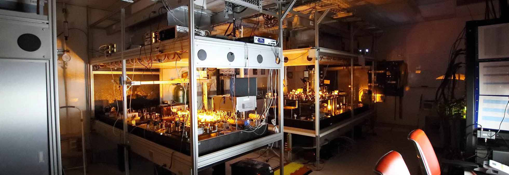

Programmable Atomic Tweezer Array

Quantum systems with robust coherence are essential in the quest for controllable and scalable quantum technologies. For example, highly coherent quantum systems are needed for the construction of quantum sensors, which can measure time, electromagnetic forces, and gravity with the highest precision, and for a future quantum computer, which promises to speed up data processing to levels unachievable with conventional silicon-based computer technology. However, most of today's quantum applications rely on the limited coherence of individual quantum systems, such as nuclear spins, electron spins, or electronic excitations.
In this project we will demonstrate that coherence can be boosted beyond the limitations of individual quantum systems. We will exploit collective effects in ordered atomic arrays, in which individual atoms will be trapped in close proximity. In this arrangement the atoms can interact and are expected to display subradiance - a quantum mechanical effect that prevents the atoms from losing internal quantum excitations - which will boost the coherence of atomic quantum systems.
We will develop and implement a novel nanophotonic platform to trap and position individual atoms in a programmable array. The setup will rely on laser-cooled strontium atoms trapped by optical tweezers with sub-micrometer spacings. The tweezer array will be generated via projection through a holographic spatial light modulator that will allow for independent control of both the intensity and phase of the trapping light field and enable the generation of optical arrays with unprecedented accuracy and high-speed tunability. With interatomic distances comparable to the atomic resonance wavelength, interference in photon emission gives rise to strongly correlated atomic states that are protected from decay, and thus have substantially longer coherence times than a single atom in free space. The researchers will develop protocols, both theoretically and experimentally, that enable accessing and exploiting the unconventional physical properties of these exotic quantum states.